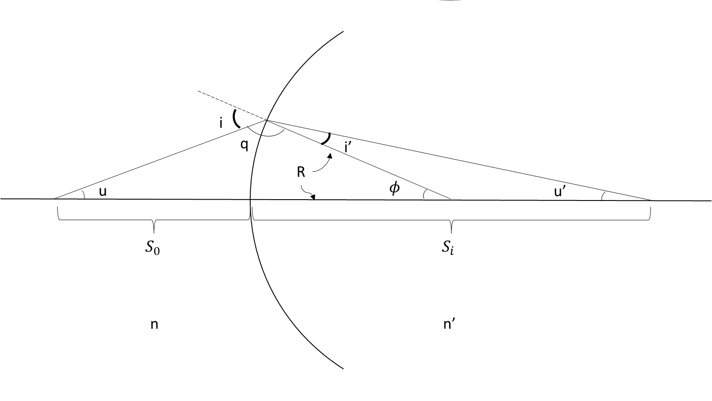
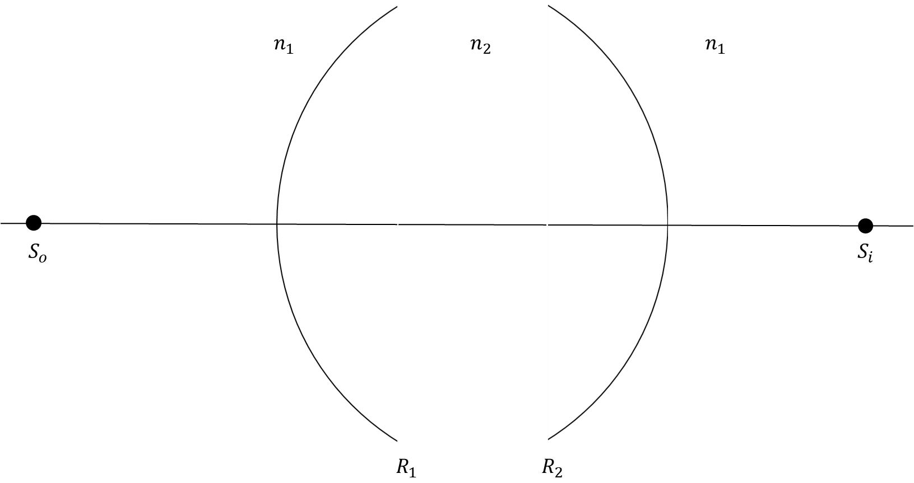
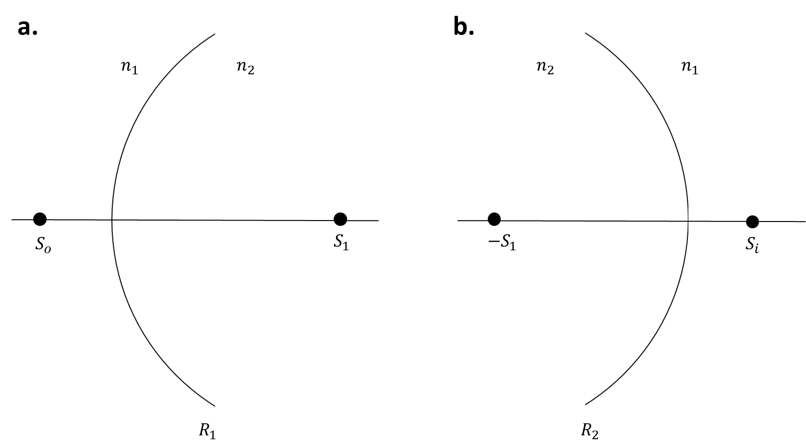
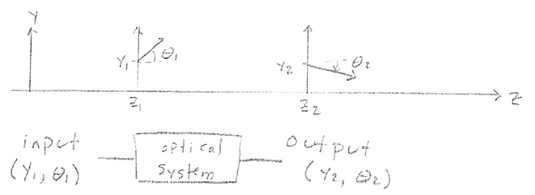
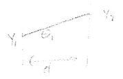
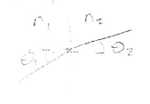
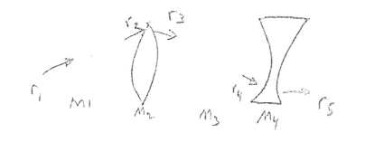
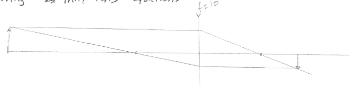
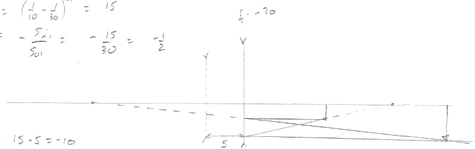

4. Lenses
4.1. Conjugate EquationLet’s start by looking at a single spherical surface. We will use Snell’s Law.
Here is our sign convention:
Light travels from left to right
Distances up are positive
Distances to the right are positive
Counterclockwise (CCW) angles are positive
For light travelling right to left, use n as negative.

Fig. 4.1 Single spherical surface interface.
Apply Snell’s Law at the interface:
(4.1) \[\begin{equation}
n \sin (i) = n' \sin (i')
\end{equation}\]
Using the paraxial approximation,
(4.2) \[
n i = n' i'
\]
We need to relate u to i and u’ to i’.
\[\begin{split}
u + \phi + q = 180 \\
q = 180 - u - \phi \\
q + i = 180 \\
i = 180 - 180 + u + \phi \\
|i| = |u| + | \phi | \\
\end{split}\]
From our sign convention, \(u \gt 0\) , \(\phi \lt 0\) , and \(i \gt 0\) . Hence,
\[
i = u - \phi
\]
Next, we’ll relate u’ to i’:
\[\begin{split}
|i'| + |u'| + 180 - |\phi| = 180 \\
|i'| = - |u'| + |\phi|
\end{split}\]
Again, noting that \(i' \gt 0\) , \(\phi \lt 0\) , and \(u' \lt 0\) ,
\[
i' = u' - \phi
\]
Substituting into (4.2) , we get:
\[
n (u - \phi) = n' (u' - \phi)
\]
Now, we need to relate the angle equation to position.
Fig. 4.2 Relating angle to position.
Again, using the paraxial approximation,
\[\begin{split}
\tan u \approx u = \frac{h}{S_o} \\
\sin \phi \approx \phi = \frac{h}{R} \\
\tan u' \approx u' = \frac{h}{S_i}
\end{split}\]
\[\begin{split}
n (u - \phi) = n' (u' - \phi) \\
n \left( \frac{h}{S_o} - \frac{h}{R} \right) = n' \left( \frac{h}{S_i} - \frac{h}{R} \right) \\
\frac{n}{S_o} - \frac{n}{R} = \frac{n'}{S_i} - \frac{n'}{R} \\
\frac{n}{S_o} - \frac{n'}{S_i} = (n - n') \frac{1}{R} \\
\end{split}\]
Or,
(4.3) \[\begin{split}
\frac{n'}{S_i} - \frac{n}{S_o} = (n' - n) \frac{1}{R} \\
\end{split}\]
where \(1 / R \equiv C\) is the curvature. (4.3) is the
conjugate equation.
4.2. Thin LensWe’ll use the conjugate equation for a single surface to get the conjugate
equation for a thin lens.
Fig. 4.3 A single surface.
The conjugate equation for the picture in Fig. 4.3
\[\begin{split}
\frac{n'}{S_i} - \frac{n}{S_o} = \frac{(n' - n)}{R} \\
\end{split}\]

Fig. 4.4 A thin lens.
The thin lens is simply the single surface, replicated; once for entry, and
once for exit. The entry and exit of the material have the same index, with
a different index in the middle. We assume zero separation between lens
surfaces.

Fig. 4.5 A thin lens. a) The first encountered surface. b) The second encountered
surface.
The following are true for the first surface:
\[\begin{split}
S = S_o \\
S' = S_1 \\
n = n_1 \\
n' = n_2 \\
R = R_1
\end{split}\]
The conjugate equation for the first surface is
\[\begin{split}
\frac{n_2}{S_1} - \frac{n_1}{S_o} = \frac{(n_2 - n_1)}{R_1} \\
\frac{n_2}{S_1} = \frac{n_1}{S_o} + \frac{(n_2 - n_1)}{R_1}
\end{split}\]
The following are true for the second surface:
\[\begin{split}
S = -S_1 \\
S' = S_i \\
n = n_2 \\
n' = n_1 \\
R = R_2
\end{split}\]
Hence,
\[\begin{split}
\frac{n_1}{S_i} - \frac{n_2}{S_1} = \frac{(n_1 - n_2)}{R_2} \\
\end{split}\]
Substituting \(n_2 / S_i\) from before,
\[\begin{split}
\frac{n_1}{S_i} - \frac{n_1}{S_o} - \frac{n_2 - n_1}{R_1} = \frac{(n_1 - n_2)}{R_2} \\
\frac{1}{S_i} - \frac{1}{S_o} = \left(\frac{1}{n_1}\right) \left( \frac{n_1 - n_2}{R_2} + \frac{n_2 - n_1}{R_1} \right)
\end{split}\]
(4.4) \[
\frac{1}{S_i} - \frac{1}{S_o} = \left(\frac{n_2 - n_1}{n_1}\right) \left(\frac{1}{R_1} - \frac{1}{R_2}\right) = \frac{1}{f}
\]
Remember that distances to the left are negative and distances to the right are positive.
If we define \(S_o\) being left of the lens as “positive”, we get
(4.5) \[
\frac{1}{S_i} + \frac{1}{S_o} = \frac{1}{f}
\]
4.3. ImagingNow, let’s look at producing an image from an object using a single thin lens.
We will analyze the lens and image using the following properties:
A ray passing through the focal point is bent parallel to the axis of symmetry.
An incident ray parallel to the lens axis is bent to pass through the back focal point.
A ray passing through the center of the lens is unchanged in direction.
A point in the object space is imaged to a point in the image space.
Parallel rays image to a point (a lens converts from incident angle to a point).
4.5. ABCD MatricesIn a homogeneous material, rays travel in straight lines. A ray is
characterized by its position and direction.

Fig. 4.6 An optical system.
An optical system is a set of optical components that change the position and
direction of rays.
In the paraxial approximation, when all angles are sufficiently small so that
\(\sin \theta \approx \theta\) , the relationship between \((y_2, \theta_2)\) and
\((y_1, \theta_1)\) is linear.
\[\begin{split}
y_2 = A y_1 + B \theta _1 \\
\theta _2 = C y_1 + D \theta _1 \\
\end{split}\]
\[\begin{split}
\begin{bmatrix}
y_2 \\
\theta _2
\end{bmatrix}
=
\begin{bmatrix}
A & B \\
C & D
\end{bmatrix}
\begin{bmatrix}
y_1 \\
\theta _1
\end{bmatrix}
\end{split}\]
The matrix
\(M = \begin{bmatrix}
A & B \\
C & D
\end{bmatrix}\)
characterizes the optical system.
Let’s calculate the ABCD matrices of some common components.
4.5.1. Free-Space PropogationRays travel in straight lines.

Fig. 4.7 Free space propogation.
\[\begin{split}
y_2 &= y_1 + \theta _1 d \\
\theta _2 &= \theta _1
\end{split}\]
\[\begin{split}
M =
\begin{bmatrix}
1 & d \\
0 & 1
\end{bmatrix}
\end{split}\]
4.5.2. Refraction at a Planar Boundary

Fig. 4.8 Refraction at a planar boundary.
\[
y_2 = y_1
\]
From the conjugate equation:
\[\begin{split}
n (\theta _1 - \alpha) &= n' (\theta _2 - \alpha) \\
\alpha &= \frac{y_1}{R} \\
\end{split}\]
\[\begin{split}
n \theta _1 - \frac{n}{R} y_1 &= n' \theta _2 - \frac{n'}{R} y_1 \\
\theta _2 &= \frac{n' - n}{n' R} y_1 = \frac{n}{n'} \theta _1 \\
\end{split}\]
\[\begin{split}
M =
\begin{bmatrix}
1 & 0 \\
\frac{n-n'}{n' R} & \frac{n}{n'}
\end{bmatrix}
\end{split}\]
4.5.3. Thin Lens
\[\begin{split}
y_2 &= y_1 \\
\theta _2 &= \theta _1 - \frac{y_1}{f}
\end{split}\]
\[\begin{split}
M =
\begin{bmatrix}
1 & 0 \\
- \frac{1}{f} & 1
\end{bmatrix}
\end{split}\]
4.5.4. Reflection from a Planar Mirror
\[\begin{split}
M =
\begin{bmatrix}
1 & 0 \\
0 & 1
\end{bmatrix}
\end{split}\]
4.5.5. Reflection from a Spherical Mirror
\[\begin{split}
M =
\begin{bmatrix}
1 & 0 \\
\frac{2}{R} & 1
\end{bmatrix}
\end{split}\]
4.6. Multiple Elements

Fig. 4.9 Multiple elements demonstrating ABCD matrix multiplication.
\[\begin{split}
r_2 &= M_1 r_1 \\
r_3 &= M_2 r_2 = M_2 M_1 r_1 \\
r_4 &= M_3 r_3 = M_3 M_2 M_1 r_1 \\
r_5 &= M_4 r_4 = M_4 M_3 M_2 M_1 r_1 \\
M_{tot} &= M_4 M_3 M_2 M_1
\end{split}\]
The first element encountered by the ray is the last matrix in the
multiplication (since matrix multiplication is performed right to left).
Example: Multiple lenses
Find the image location and magnification.
\(S_0 = 30mm\)
\(d = 5mm\)
\(f_1 = 10mm\)
\(f_2 = -20mm\)
Solution

Fig. 4.10 First lens analysis.
Using the thin lens equations,
\[\begin{split}
\frac{1}{30} + \frac{1}{S_{i1}} &= \frac{1}{10} \\
S_{i1} &= \left( \frac{1}{10} - \frac{1}{30} \right) ^{-1} = 15 \\
M_1 &= - \frac{S_{i1}}{S_{o1}} = - \frac{15}{30} = - \frac{1}{2}
\end{split}\]

Fig. 4.11 Second lens analysis.
Adjusting \(S_{o2}\) to be relative to the second lens, which is 5 mm in front
of the first lens,
\[
S_{o2} = 15 - 5 = -10
\]
we get,
\[\begin{split}
\frac{1}{-10} + \frac{1}{S_{i2}} &= - \frac{1}{10} \\
S_{i2} &= \left( - \frac{1}{20} + \frac{1}{10} \right) ^{-1} = 20 \\
M_2 &= \frac{-20}{-10} = 2
\end{split}\]
\[
M = -\frac{1}{2} \cdot 2 = -1
\]
The magnification is unity (although the image is inverted) and the image is
20 mm to the right of the second lens.
Example: ABCD matrices with multiple lenses
Repeat the last example, but using ABCD matrices.
Solution
The distance to the first lens is:
\[\begin{split}
M_1 =
\begin{bmatrix}
1 & 30 \\
0 & 1
\end{bmatrix}
\end{split}\]
The first lens is:
\[\begin{split}
M_2 =
\begin{bmatrix}
1 & 0 \\
- \frac{1}{10} & 1
\end{bmatrix}
\end{split}\]
The distance from the first to the second lens is:
\[\begin{split}
M_3 =
\begin{bmatrix}
1 & 5 \\
0 & 1
\end{bmatrix}
\end{split}\]
The second lens is:
\[\begin{split}
M_4 =
\begin{bmatrix}
1 & 0 \\
\frac{1}{20} & 1
\end{bmatrix}
\end{split}\]
The distance to the focus is:
\[\begin{split}
M_5 =
\begin{bmatrix}
1 & d \\
0 & 1
\end{bmatrix}
\end{split}\]
If we launch a ray with a height of 1 and a variable ray angle into the system,
we get:
\[\begin{split}
\begin{bmatrix}
y_2 \\
\theta _2
\end{bmatrix}
&=
\begin{bmatrix}
1 & d \\
0 & 1
\end{bmatrix}
\begin{bmatrix}
1 & 0 \\
0.05 & 1
\end{bmatrix}
\begin{bmatrix}
1 & 5 \\
0 & 1
\end{bmatrix}
\begin{bmatrix}
1 & 0 \\
-0.1 & 1
\end{bmatrix}
\begin{bmatrix}
1 & 30 \\
0 & 1
\end{bmatrix}
\begin{bmatrix}
1 \\
\theta
\end{bmatrix} \\
&=
\begin{bmatrix}
1 & d \\
0 & 1
\end{bmatrix}
\begin{bmatrix}
0.5 & 20 \\
-0.075 & -1
\end{bmatrix}
\begin{bmatrix}
1 \\
\theta
\end{bmatrix} \\
&=
\begin{bmatrix}
1 & d \\
0 & 1
\end{bmatrix}
\begin{bmatrix}
0.5 & 20 \theta \\
-0.075 & -\theta
\end{bmatrix} \\
\begin{bmatrix}
y_2 \\
\theta _2
\end{bmatrix}
&=
\begin{bmatrix}
0.5 + 20 \theta + d(-0.075 - \theta) \\
-0.075 - \theta
\end{bmatrix}
\end{split}\]
For an image point, the ray height needs to be independent of the incident ray
angle.
\[
y_2 = 0.5 - 0.075 d + (20 - e) \theta
\]
where
\[\begin{split}
20 - d &= 0 \\
d &= 20
\end{split}\]
Back substitute \(d = 20\) to get the image height:
\[
y_2 = 0.5 - (0.075)(2) = -1
\]
We get the same result; namely, the object location is 20mm to the right of the
second lens and the magnification is -1.